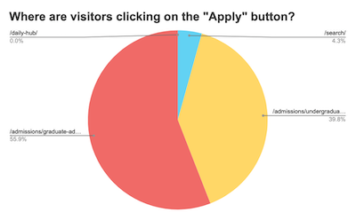
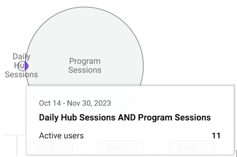
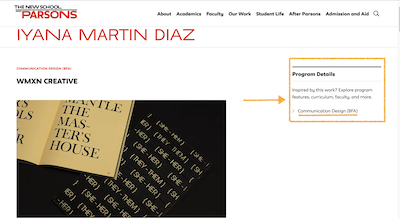
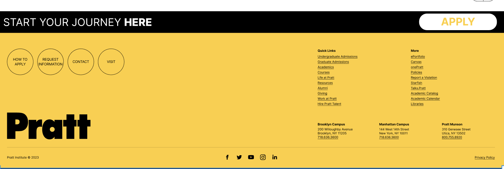
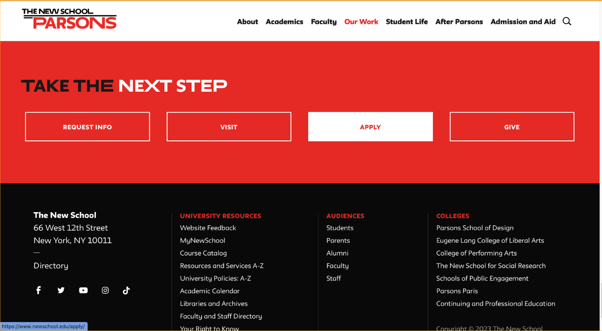
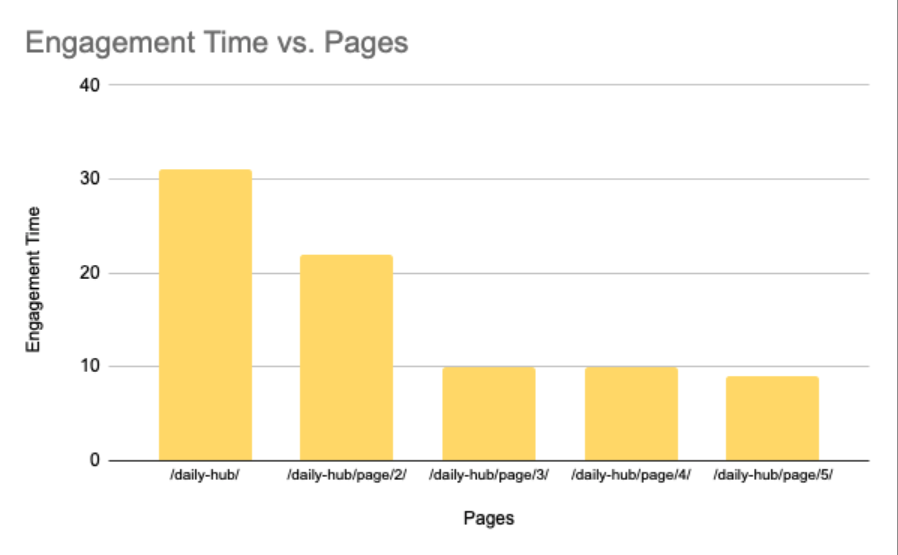
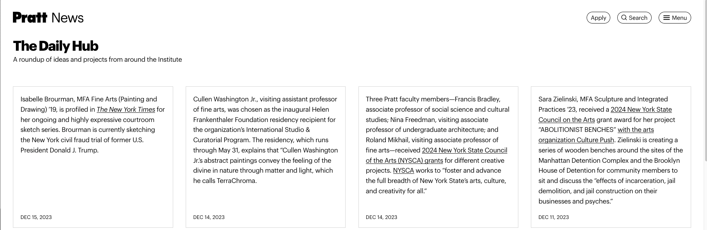
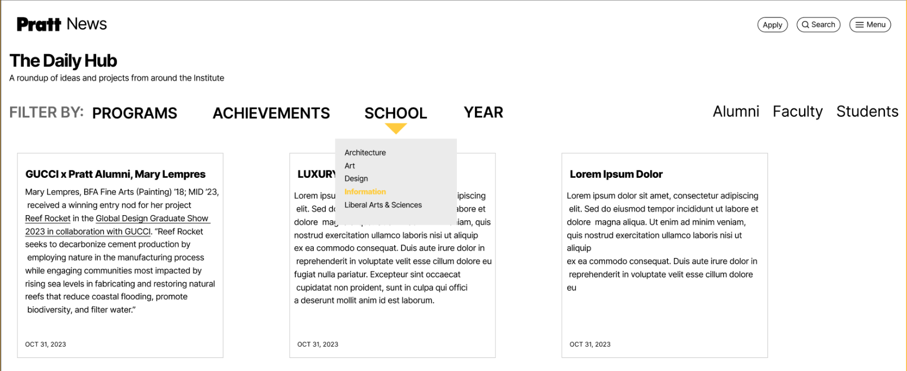

Pratt Institute, a renowned design school, revamped their 12 year old website and relaunched it this year. Because the redesigned website was released this year, the data we chose to analyze is from January 2023 - October 2023 (when the team started the project). I along with a team of 4 other researchers analyzed the user engagement on the client's requested key pages (News, Events, Daily Hub, Prattfolio) using Google Analytics 4. Our client, Pratt Institute, wanted us to analyze how these pages are working to improve user engagement, and whether or not they are successful in drawing users to Pratt’s program offerings and application details. I focused on The Daily Hub which is essentially the current events of all things Pratt Institute. It captures quick snapshots of all accolades of alumni and current students from solo exhibitions, awards, publications, and more!
How might we increase engagement and time spent on the Daily Hub?
How might we motivate users to explore Pratt's academic offerings?
How might we improve conversion rates from Daily Hub visitors to program inquiries?
PROCESS OVERVIEW & TOOLS
FINDINGS & RECOMMENDATIONS
🔍 FINDING 1 | Users that visit the Daily Hub are not clicking "Apply" button or exploring program pages but are clicking the external links on the Daily Hub. The Daily Hub only had 97 active users and of those users, only 11 users also had sessions on Program related pages. The Program pages attract a larger audience in 1 month, 15,000 most likely because there is a direct link to checking out the programs of a prospective school. It is clear with the low overlap that the same users are not being reached.

Shows that the majority of the “Apply” button clicks occur on admissions related pages. The mental model makes more sense to apply to a school from their admission’s page. But the mental model for applying to a school from a page that highlights achievements from alumni and current students(Daily Hub) is not as clear.

Segment overlap showing how the target audience of the Daily Hub and program pages are not the same.
👍 RECOMMENDATION 1-1 | Embed articles from Pratt websites: Keep users within Pratt's domain.
👍 RECOMMENDATION 1-2 | Add clear and contextually relevant CTAs: Guide users towards program pages.

Parson's example of adding a link to explore more work from alumni in a specific major. This allows for additional CTAs to encourage users to stay within Parson's domain.
👍 RECOMMENDATION 1-3 | Add clear copy to make the connection between the CTAs and the more clear. Examples are: “Join Our Community” or “Start Your Journey Here”

Mockup of proposed design for Pratt above their footer.

Parson’s website has a CTA for visitors on how they can take the next step after finding interesting or inspiring information on their page.
🔍 FINDING 2 | Average time spent on the Daily Hub was only 36 seconds This bar graph indicates the homepage has the highest engagement, with subsequent pages showing a decline.

Bar chart showing time spent on each page of The Daily Hub.
👍 RECOMMENDATION 2-1 | Add headline titles to improve scannability and attract users to relevant achievements. Help users personalize their experience through sorting and filtering.

Pratt's Current Daily Hub Page shows a lot of text that is hard to scan and no functionality is available to filter content

Mockup of proposed design for Pratt's Daily Hub page with filters and headers for each card.
MEASURING SUCCESS
Recommendations would be successful if there is...
increased time spent on the Daily Hub.
higher overlap of users visiting Daily Hub & program pages.
positive user feedback on the redesigned page through surveys or interviews
CLIENT FEEDBACK
They loved the examples from peer institutions
Helped encourage their brainstorming on how to have more CTAs for lesser viewed pages like the Daily Hub
They found the Daily Hub recommendations really helpful such as internal links and connecting others pages from Pratt on the Daily Hub
Overall, they liked that the recommendations for the Daily Hub can be used for other pages as well!
CONCLUSION
By implementing these recommendations, Pratt can transform the Daily Hub into a powerful tool for inspiring and converting prospective students. This case study demonstrates a data-driven approach to UX research and design, with clear goals, actionable insights, and measurable outcomes.